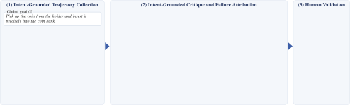
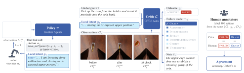

Abstract
Frontier multimodal language agents such as GPT-6 Astra have demonstrated strong capabilities in controlling robots directly via low-level numerical actions without high-level primitives. However, existing benchmarks report only episode-level success rates, which show neither how these agents succeed nor where they fail. In this paper, we present a systematic action-level analysis of frontier agents on direct robot control across 12 manipulation benchmarks. We introduce AgentRoboCritic, an intent-grounded critique framework in which the policy agent states a local intent alongside each action, and a critic evaluates the action’s outcome and failure mode against this intent. Our action-level analysis demonstrates the promising capabilities of frontier agents on direct robot control, including closed-loop recovery from local execution failures, reliable semantic grounding across diverse scenes, and strong zero-shot manipulation without task-specific adaptation. It also identifies their current limitations, including task-relevant physical execution bottlenecks such as grasping and alignment, and uneven recovery across failure modes. Finally, we validate our critic on a 400-action human-annotated benchmark and release a dataset of 12,844 annotated actions alongside a fine-tuned open-source critic, Muse-Glimmer-30B, whose failure-mode accuracy rises from 32.58% to 74.24%, enabling low-cost action-level analysis.
Direct Robot Control
Frontier multimodal agents such as GPT-6 Astra can control a robot directly. At every turn the agent receives the task instruction G, the current camera images Otpre and its interaction history ht, and issues a low-level numerical command at, such as an end-effector pose, joint targets or a gripper opening, as a structured tool call. The robot executes the command and returns new images, closing the loop without high-level primitives or task-specific fine-tuning:
Evaluating Robot Execution
To learn how these agents succeed and where they fail, we need to judge their execution, and the two usual granularities both fall short (Figure 1(a)).
Episode-level evaluation reports one success bit per episode. It shows neither how the agent succeeded nor where it failed: half of the successful episodes we analyze contain at least one failed action, and a failed episode does not say which action went wrong.
Action-level evaluation against the task goal alone is ill-posed. Robot manipulation is multimodal: many different trajectories can validly advance the same task, so whether a single action succeeded depends on the sub-goal it was meant to reach. The same motion can be an incomplete reach, a missed alignment or a failed grasp depending on its intended result, and without that sub-goal even GPT-6 Astra labels most actions Unverifiable.
We therefore make the sub-goal explicit: the agent states a local intent with every action, and each action is judged against it (Figure 2).
Intent-Grounded Action-Level Critique
In AgentRoboCritic, the policy agent states a natural-language local intent gt, the immediate sub-goal of the action, in the same tool call as each action at; the execution harness rejects any call that omits it. A critic 𝒞 then judges every action against its own intent:
The critic, GPT-6 Astra, sees the task goal, the local intent and the frames around the action 𝒪t, and returns the outcome ŷt (Achieved, Failed, Partial or Unverifiable), the failure mode m̂t of a failed action and a short note êt stating the physical evidence (Figure 3). It follows three principles:
- Contact-aware windows: reaching and alignment are judged from the frames before and after the action; gripper closures also need the lift that follows.
- Local validity: an action is judged against its own intent, so an early failed grasp is a failure even if the agent recovers later.
- Evidence-bounded attribution: each failure gets one mode and a note naming the arm, object, contact geometry and timing.


Swipe to see panels (2) and (3) →
Action-Level Failure Modes
Knowing that an action failed is only half of a diagnosis. For every failed action the critic also names why it failed, choosing one of seven failure modes that are defined against the local intent:
- Grasp
- The object is not acquired or not retained, which defeats the local intent.
- Alignment
- A held object or an intended contact misses its local target relation.
- Interference
- Unintended motion, collision or displacement defeats the local intent.
- Effect
- A tool stays under control but does not produce its stated effect.
- Incomplete motion
- A commanded movement, opening or reset remains incomplete and no more specific failure mode applies.
- Choice
- The execution contradicts the object, order or category stated in the local intent.
- Unresolved
- The action fails, but its failure mode cannot be established from the evidence.
With these labels on the annotated actions of 12 manipulation benchmarks, we can ask what frontier agents already do well and where they still fail.
Capabilities of Frontier Agents on Direct Robot Control
The action-level labels first reveal three strengths of frontier agents that episode-level success rates hide: they recover from their own failures, act on the objects they intend, and manipulate zero-shot.
Closed-Loop Recovery
Frontier agents recover from local execution failures in closed loop, unlike imitation-trained policies whose errors compound under covariate shift (Ross et al., 2011). 49.8% of successful episodes contain at least one failed action, and episodes with one or two failed actions still succeed 40.3% of the time (75.1% without failures). 57.7% of failed actions are verifiably recovered by the end of the episode (38.9% within 10 actions), and benchmarks that recover more also succeed more (r = 0.81).
Recovery analysis: criterion and counts
Failed actions. We analyze all 12,163 failed actions with an annotated failure mode in the 1,989 officially graded episodes that contain at least one, across the 12 benchmarks. The reported shares give every failed action equal weight. RoboDojo contributes 9,923 of the failed actions; Figure 6(d) shows every benchmark separately (select a point for its statistics).
Recovery criterion. For each failed action, we follow the saved trajectory forward and record the first later action that shows a verified recovery. A recovery is either a repair of the original sub-goal or progress along a different route that bypasses it. After a missed grasp, a regrasp counts once the object visibly rises with the gripper. In one trajectory, after failing to grasp a ball inside a cup, the agent grasps and lifts the cup with the ball inside, which prepares the pour and counts as a recovery along a different route. A later action that only achieves its own stated intent, such as lifting an empty gripper after a missed grasp, does not count. A recovery is counted even if the episode later fails. Of the 12,163 failures, 6,435 are repaired directly and 589 are bypassed along a different route, and the remaining 5,139 are not recovered. All 12,163 remain in the denominator.
Recovery over actions. Figure 6(c) shows the cumulative share of analyzed failures whose first verified recovery occurs within a given number of later actions. In total, 4,734 failures (38.9%) are recovered within 10 actions and 7,024 (57.7%) by the end of the episode. The panel shows the overall curve and three benchmarks, and its band and error bars are Wilson 95% intervals.
Recovery and task success. Figure 6(d) plots, for each benchmark, the share of its analyzed failures recovered by the end of the episode against the official success rate of its graded episodes that contain at least one failed action, 1,989 episodes in total. The two rates correlate across the 12 benchmarks with Pearson r = 0.81 (p = 0.001) and Spearman ρ = 0.86.
Review procedure. Candidate recoveries are identified from the local intents and the saved frames of each trajectory, and every recorded recovery is checked against the later action that it cites. A second independent reading of 24 failures, two per benchmark, agrees with the first on whether a recovery occurred in 21 cases.
Semantic Grounding
Specialized VLAs and WAMs remain vulnerable to visual perturbations, camera shifts and rearranged scenes. A failed action is labeled Choice when its execution contradicts the object, order or category stated in its local intent, and such errors are only 0.2% of all failed actions, at most 3.3% on any single benchmark (Figure 8). Even with novel object instances and visual distractors, frontier agents act on the object, order and category they intend.
Zero-Shot Manipulation
Without task-specific fine-tuning, GPT-6 Astra succeeds in 91% of RoboTwin 2.0 and 90% of YAMLab episodes, where π0.5 reaches 6% and 0% and InternW0-Δ 0%.
Inference latency
We measure the decision latency of GPT-6 Astra and π0.5 on the tasks of the zero-shot comparison (Figure 9) and on further matched tasks of the Embodied First Exam suites. A latency interval runs from the completion of the most recent observation request to the start of the next executed action submission, both read from the journal of the robot service. Read-only tool calls inside the interval are included, and intervals across resets or episodes and actions that are not executed are excluded. For each run we take the median interval, and the table of decision latency below reports the mean and standard deviation of these run medians over the tasks timed for both policies. Across 74 matched tasks, a decision takes 33.3 ± 27.9 s for GPT-6 Astra and 0.12 ± 0.02 s for π0.5, and the gap is similar on RoboTwin 2.0 and YAMLab. GPT-6 Astra can issue several commands within one model turn, so the median over all 882 of its recorded intervals is 0.17 s, and we therefore summarize each run by its median interval. This shows that frontier agents reach their zero-shot success at a decision latency more than two orders of magnitude above that of a VLA.
| Tasks | GPT-6 Astra (s) | π0.5 (s) |
|---|---|---|
| RoboTwin 2.0 | 40.5 ± 27.6 | 0.109 ± 0.002 |
| YAMLab | 36.1 ± 30.0 | 0.142 ± 0.002 |
| All matched tasks | 33.3 ± 27.9 | 0.121 ± 0.024 |
Limitations of Frontier Agents on Direct Robot Control
The same labels also show where frontier agents still fail: in low-level physical interaction, and in recovering from precision failures.
Physical Execution Bottlenecks
The bottleneck follows task geometry (Table 1): Grasp is the most frequent failure mode on nine of the ten non-tactile benchmarks, Alignment dominates tight-tolerance insertion from vision alone (UniVTAC, OpenViTac), clutter raises Interference, and LIBERO-MAX and StationeryBench show many Incomplete motion failures.
| Share of n (%) | ||||||||
|---|---|---|---|---|---|---|---|---|
| Benchmark | Grasp | Alignment | Interference | Effect | Incomplete motion | Unresolved | Choice | n |
| RoboDojo | ||||||||
| Precision | 63 | 17 | 15 | 2 | 4 | – | 1,500 | |
| Open | 68 | 9 | 16 | 4 | 3 | 1,489 | ||
| Long-horizon | 49 | 20 | 26 | 1 | 4 | <1 | 2,586 | |
| Generalization | 47 | 15 | 32 | 4 | 2 | <1 | 3,646 | |
| Memory | 67 | 5 | 27 | <1 | 1 | 938 | ||
| StationeryBench | 42 | 7 | 17 | 1 | 33 | 411 | ||
| Astranomy | 77 | 9 | 4 | 11 | 869 | |||
| UniVTAC | 25 | 75 | 110 | |||||
| OpenViTac | 10 | 86 | 3 | 1 | 164 | |||
| ContactBench 1.0 | 71 | 13 | 3 | 4 | 9 | 75 | ||
| LIBERO-MAX | 23 | 14 | 3 | <1 | 57 | 3 | 273 | |
| Meta-World+ | 41 | 19 | 30 | 5 | 5 | 63 | ||
| DexJoCo | 52 | 25 | 7 | 3 | 11 | 2 | 103 | |
| RoboWits | 64 | 11 | 17 | 3 | 4 | 1 | 94 | |
| RoboTwin 2.0 | 39 | 22 | 24 | 15 | 54 | |||
| YAMLab | 87 | 8 | 3 | 2 | 62 | |||
Action outcomes per benchmark
The per-benchmark tables report the action outcomes, failure modes and Grasp stages of every benchmark, with RoboDojo shown by its five evaluation dimensions. The RoboDojo statistics in the main text combine all five dimensions. Each cell gives the share of its row in percent and is shaded by that share, n is the row total, and an empty cell is zero.
| Share of n (%) | ||||||
|---|---|---|---|---|---|---|
| Benchmark | Achieved | Failed | Partial | Unverifiable | Not applicable | n |
| RoboDojo | ||||||
| Precision | 61 | 8 | 29 | 2 | 18,315 | |
| Open | 79 | 11 | 9 | 1 | 13,984 | |
| Long-horizon | 78 | 11 | 10 | <1 | 23,299 | |
| Generalization | 80 | 11 | 8 | 1 | 34,430 | |
| Memory | 85 | 6 | 8 | 1 | 15,401 | |
| StationeryBench | 58 | 27 | 15 | <1 | 1,544 | |
| Astranomy | 66 | 10 | 24 | <1 | 9,003 | |
| UniVTAC | 86 | 8 | 5 | 1,297 | ||
| OpenViTac | 91 | 7 | 2 | 2,303 | ||
| ContactBench 1.0 | 44 | 6 | 48 | 1 | <1 | 1,161 |
| LIBERO-MAX | 50 | 4 | 31 | 15 | 6,376 | |
| Meta-World+ | 81 | 11 | 8 | 581 | ||
| DexJoCo | 60 | 18 | 22 | 575 | ||
| RoboWits | 65 | 16 | 18 | 1 | 589 | |
| RoboTwin 2.0 | 72 | 8 | 8 | 12 | 705 | |
| YAMLab | 66 | 15 | 19 | 406 | ||
Uneven Recovery Across Failure Modes
Most Incomplete motion, Grasp and Interference failures are recovered, but only about one in three Alignment and Effect failures, and additional actions do not close the gap (Figure 10(a)).
Recovery over actions by failure mode
Recovery by failure mode. Figure 10(a) splits the analyzed failures by failure mode, and its error bars are Wilson 95% intervals. By the end of the episode, the recovered share is 68.2% for Incomplete motion (479 of 702), 63.7% for Grasp (4,155 of 6,523), 59.1% for Interference (1,602 of 2,711), 35.7% for Alignment (681 of 1,908) and 29.6% for Effect (87 of 294). Choice and Unresolved have 21 and 4 analyzed failures, of which 18 and 2 are recovered. The figure below shows the recovered share within a given number of later actions. For Alignment and Effect, it changes by less than three percentage points after 30 actions.
Where Grasps Fail
Three in five Grasp failures occur as the gripper closes: it pinches a rim, tip or edge, or closes beside or above the right object (Figure 10(b)). The bottleneck is the fine 3D localization of the gripper relative to the object. After capture, most losses happen while carrying, and 9.5% of Grasp failures are actions issued with an already empty gripper.
Grasp sub-categories and their stages
Grasp sub-categories. Each Grasp failure receives a sub-category that describes the contact error or the moment of loss (table below). The sub-categories are grouped as in Figure 10(b) into failures at closure, losses after capture, actions issued with an already empty gripper, and failed grasps whose contact cannot be resolved. A sub-category is assigned only after the action is judged as failed.
| Sub-category | Stage |
|---|---|
| At closure | |
| Closure above the object | Closure |
| Closure beside the object | Closure |
| Pinch on a rim, tip, or edge | Closure |
| Closure pushes or tips the object away | Closure |
| The support or another object is caught | Closure |
| Wrong jaw faces or axis oppose the contact | Closure |
| Failed nut-bore grasp | Closure |
| After capture | |
| Receiving hand fails to secure a transfer | Handover |
| Loss during the first lift | Lift |
| Loss during carry or wrist turning | Carry |
| External contact dislodges the object | Carry |
| Opening before support is established | Release |
| Other | |
| Action with an empty gripper | Other |
| Unresolved contact | Other |
Grasp failures by stage per benchmark
| At closure | After capture | Other | ||||||
|---|---|---|---|---|---|---|---|---|
| Benchmark | Closure | Handover | Lift | Carry | Release | Empty gripper | Unresolved contact | n |
| RoboDojo | ||||||||
| Precision | 35 | 2 | 5 | 8 | 29 | 20 | 944 | |
| Open | 70 | <1 | 6 | 14 | <1 | 5 | 5 | 1,012 |
| Long-horizon | 82 | <1 | 4 | 10 | <1 | 2 | 1 | 1,272 |
| Generalization | 65 | 3 | 6 | 18 | <1 | 7 | 1 | 1,703 |
| Memory | 64 | 5 | 27 | 4 | <1 | 626 | ||
| StationeryBench | 41 | 4 | 2 | 9 | 3 | 10 | 30 | 174 |
| Astranomy | 62 | 5 | 6 | 11 | 16 | 665 | ||
| UniVTAC | 25 | 50 | 7 | 7 | 11 | 28 | ||
| OpenViTac | 12 | 12 | 6 | 71 | 17 | |||
| ContactBench 1.0 | 9 | 8 | 8 | 6 | 4 | 66 | 53 | |
| LIBERO-MAX | 8 | 3 | 2 | 58 | 29 | 62 | ||
| Meta-World+ | 50 | 8 | 12 | 31 | 26 | |||
| DexJoCo | 6 | 2 | 4 | 89 | 54 | |||
| RoboWits | 8 | 7 | 22 | 2 | 10 | 52 | 60 | |
| RoboTwin 2.0 | 52 | 10 | 5 | 5 | 29 | 21 | ||
| YAMLab | 13 | 9 | 4 | 13 | 4 | 57 | 54 | |
Reliability of Action-Level Critics
Every result above rests on the critic’s labels. We therefore test critics against human annotators.
Human-Annotated Benchmark
We validate critics on 400 human-labeled actions (34% successful, 66% failed). GPT-6 Astra is the most accurate critic. Re-inspecting their disagreements, mostly compound failures with two valid modes, the annotators accepted most of its critiques; counting those, its agreement with them exceeds 90% on both outcome and failure mode. Judging the success of an action is within reach of current frontier models; attributing a failure to its physical cause is what separates them.
| Critic Model | Outcome | Failure Mode | Overall Accuracy (%) | Cost ($) | ||
|---|---|---|---|---|---|---|
| Acc. (%) | κ | Acc. (%) | κ | |||
| Proprietary Models | ||||||
| GPT-6 Astra | 79.25 | 0.497 | 80.68 | 0.600 | 71.25 | 26.06 |
| w/o local intent gt | 25.25 | 0.102 | 25.00 | 0.078 | 24.50 | 25.18 |
| GPT-6.1 Sol | 74.50 | 0.487 | 62.12 | 0.314 | 69.75 | 5.00 |
| GPT-6.1 Terra | 74.50 | 0.470 | 61.36 | 0.303 | 66.75 | 2.36 |
| Claude Fable 5.2 | 78.25 | 0.523 | 72.73 | 0.468 | 71.00 | 26.52 |
| Claude Opus 5.5 | 72.50 | 0.434 | 60.98 | 0.323 | 66.00 | 12.76 |
| Claude Sonnet 5.5 | 56.75 | 0.223 | 32.58 | 0.120 | 50.75 | 5.51 |
| Open-Source Models | ||||||
| Kimi K3.1 Pro | 54.50 | 0.211 | 32.20 | 0.118 | 52.50 | 9.06 |
| DeepSeek-V4.1-Flash-1017 | 54.50 | 0.202 | 32.95 | 0.118 | 52.00 | 1.96 |
| GLM-5.3-Flash | 62.00 | 0.310 | 42.80 | 0.177 | 58.25 | 0.97 |
| Muse-Glimmer-30B (Zero-Shot) | 52.50 | 0.144 | 32.58 | 0.122 | 34.75 | 1.34 |
| Muse-Glimmer-30B (Fine-Tuned, Ours) | 76.25 | 0.444 | 74.24 | 0.484 | 67.75 | 0.79 |
Annotation interface
The figure below shows the web-based interface used to label the human-annotated test set. For each action, it shows the task instruction, the local intent stated with the action and the frames of every camera view, synchronized by source time. The annotator selects one of the five outcomes and, for a failed action, its failure mode and, for Grasp, its sub-category, with the definitions of the failure modes and grasp sub-categories linked next to each field.
![Web annotation interface for a RoboDojo-Long-Horizon action. Top: the task, Place all stacking toy pieces onto the correct pegs, and the action’s original note, The blue hole is centred between the side-aligned jaws. I am closing at the piece’s current height on the board. Middle: an observation window with synchronized Head, Left Wrist and Right Wrist frames. Right: the judgment panel, Did the action meet its intent?, with Not achieved selected among the five outcomes, failure mode Grasp, Grasp sub-category Pinch on a rim, tip, or edge, an optional failure reason and a Save & next button.](static/img/appx/annotation_interface.jpg)
Ablation on Local Intent
Without the local intent, GPT-6 Astra’s outcome accuracy drops from 79.25% to 25.25% and its failure-mode accuracy from 80.68% to 25.00%: most actions become Unverifiable. This confirms that relying solely on the global goal leaves individual action evaluation ambiguous, preventing the critic from reliably determining action success.
Open-Source Critic
Fine-tuned on 12,844 annotated actions, Muse-Glimmer-30B raises its failure-mode accuracy from 32.58% to 74.24%, second only to GPT-6 Astra, at over 30× lower cost.
Critic training details
Training data. We keep executed actions with an achieved or failed outcome and complete pre- and post-action observations, and sample one achieved action for every three failed actions. The splits are separated at the episode level, and no episode contributes actions to more than one split (the table of critic dataset splits below). The 400 human-annotated actions used in Table 2 are drawn from the test split.
| Split | Achieved | Failed | Total |
|---|---|---|---|
| Training | 3,211 | 9,633 | 12,844 |
| Validation | 387 | 1,161 | 1,548 |
| Test | 484 | 1,452 | 1,936 |
Input and target. Each sample follows the critic formulation of Intent-Grounded Critique. The input contains the task goal G, the local intent gt and the ordered camera frames of 𝒪t, preceded by a system prompt with the complete definitions of the outcome and failure-mode categories. The target is a JSON object with four fields, namely the outcome, the failure mode, the grasp sub-category (the table of Grasp sub-categories under Grasp Failures) and a short failure reason. The last three fields are null for an achieved action.
Fine-tuning. We fine-tune Muse-Glimmer-30B with a LoRA adapter of rank 32 on the Fireworks AI platform, keeping the base weights frozen. Training runs for 2 epochs with a batch size of 32 and a maximum context length of 65,536 tokens, with a learning rate of 5×10−5, 25 warmup steps and a cosine schedule.
Inference. The fine-tuned critic decodes at temperature 0 with at most 1,024 output tokens. An output that is not valid JSON counts as incorrect.
Self-Preference Bias
GPT-6 Astra serves as both the control policy and the primary critic, so we examine whether it favors its own rollouts. A critic biased toward its own policy would systematically label failed actions as Achieved. GPT-6 Astra does so for only 19 of the 264 human-labeled failed actions, the fewest among all evaluated critics (Table 3). Claude Fable 5.2, a frontier model from a different model family, reaches a similar outcome accuracy of 78.25%, compared to 79.25% for GPT-6 Astra (Table 2). GPT-6 Astra is therefore the strictest evaluator of its own failed actions, and the high agreement with human labels holds across model families.
Fine-tuning on our dataset, annotated by GPT-6 Astra, does not pass such a bias on to the open-source critic. Scored on test episodes kept out of training, Muse-Glimmer-30B halves the failed actions it labels as Achieved, from 67 to 34, and becomes stricter on failed actions and more accurate on the human-annotated benchmark.
| Critic | Labeled Achieved |
|---|---|
| Proprietary Models | |
| GPT-6 Astra | 19 (7.2%) |
| Claude Fable 5.2 | 75 (28.4%) |
| Claude Opus 5.5 | 77 (29.2%) |
| GPT-6.1 Sol | 81 (30.7%) |
| GPT-6.1 Terra | 71 (26.9%) |
| Open-Source Models | |
| Muse-Glimmer-30B (Zero-Shot) | 67 (25.4%) |
| Muse-Glimmer-30B (Fine-Tuned, Ours) | 34 (12.9%) |
Dataset and Release
The 12 manipulation benchmarks of the dataset, each shown with a typical rollout or scene from its project page (RoboDojo, StationeryBench and YAMLab: frames of our own rollouts). Select a card to visit the project page.
The dataset combines new GPT-6 Astra rollouts on seven benchmarks with released GPT-6 Astra traces of five others (RoboDojo, StationeryBench, Astranomy, UniVTAC, OpenViTac), whose local intents were logged with every action. We release:
- Critique dataset: 12,844 annotated actions with the verbatim local intent, the commanded action, the frames shown to the critic, and the outcome, failure mode, grasp sub-category and failure reason.
- Human-annotated benchmark: 400 actions with human outcome and failure-mode labels.
- Muse-Glimmer-30B critic: the fine-tuned open-source critic VLM.
Benchmarks, action units and coverage
Benchmarks. The table below lists the episodes, episode success rate, annotated actions and action success rate of each benchmark in the main dataset.
| Benchmark | Episodes | Success (%) | Actions | Success (%) |
|---|---|---|---|---|
| RoboDojo | 2,100 | 22 | 105,429 | 77 |
| StationeryBench | 100 | 7 | 1,544 | 58 |
| Astranomy | 56 | 52 | 9,003 | 66 |
| UniVTAC* | 80 | 76 | 1,297 | 86 |
| OpenViTac* | 130 | 80 | 2,303 | 91 |
| ContactBench 1.0 | 71 | 48 | 1,161 | 44 |
| LIBERO-MAX | 64 | 98 | 6,376 | 50 |
| Meta-World+ | 50 | 98 | 581 | 81 |
| DexJoCo | 11 | 64 | 575 | 60 |
| RoboWits | 15 | 67 | 589 | 65 |
| RoboTwin 2.0 | 47 | 91 | 705 | 72 |
| YAMLab | 10 | 90 | 406 | 66 |
Action units. RoboDojo is reported by its five evaluation dimensions, Precision, Open, Long-horizon, Generalization and Memory, and an action is one executed call of the agent, indexed separately from policy turns and simulator frames. In StationeryBench, an action is one physical move_to call, matched to its turn and observation step in the released logs, and stop calls are not actions. In Astranomy, an action is one native action chunk. In UniVTAC and OpenViTac, an action is one block of primitives issued under a single local intent, and the low-level controls inside a block are not counted as separate actions.
We keep three sources of images separate: the images shown to the agent, the frames returned with each response and the frames of the replay.
Coverage. Every action of the ingested benchmarks carries a local intent. This covers all 105,429 RoboDojo actions, 1,544 StationeryBench actions, 9,003 Astranomy actions and 3,600 UniVTAC and OpenViTac actions.
For LIBERO-MAX, Meta-World+, DexJoCo, RoboWits, RoboTwin 2.0 and YAMLab, all 9,232 actions across 197 episodes are annotated, including those judged Partial, Unverifiable or Not applicable.
BibTeX
@misc{agentrobocritic2026, title = {AgentRoboCritic: Understanding the Capability of Frontier Agents on Direct Robot Control}, author = {Du, Yiyang and Kuang, Yuxuan and Zhao, Qitao and Wang, Yixuan and Guo, Zhanqiu and Xu, Yi and Li, Xin and He, Wenbin and Ren, Liu and Xiong, Chenyan}, year = {2026}}